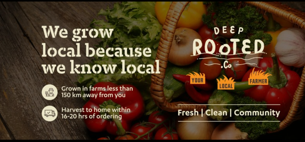

Building finance functions from scratch, detecting fraud, and preparing for investor scrutiny — across agritech and media-tech SaaS.

Clover Ventures Pvt Ltd is a high-growth agritech startup that connects farmers directly to consumers and B2B clients across Bangalore and Hyderabad. The consumer brand, Deep Rooted, delivers fresh produce within 12–16 hours of harvest — working with 90+ farmers across 120+ acres, with operations spanning hydroponics, open-field farming, and a complex multi-state supply chain. Backed by Accel, Omnivore, IvyCap Ventures, and Mayfield in a $12.5M Series A round.
Quintype Technologies is a New York-headquartered media-tech SaaS company providing an AI-powered digital experience platform for publishers. Their suite of products — including Bold CMS, Ahead, and Accesstype — serves 300+ global publishers managing over 1.5 billion monthly pageviews, including marquee brands like NDTV Profit, The Quint, Fortune India, and The New Indian Express.